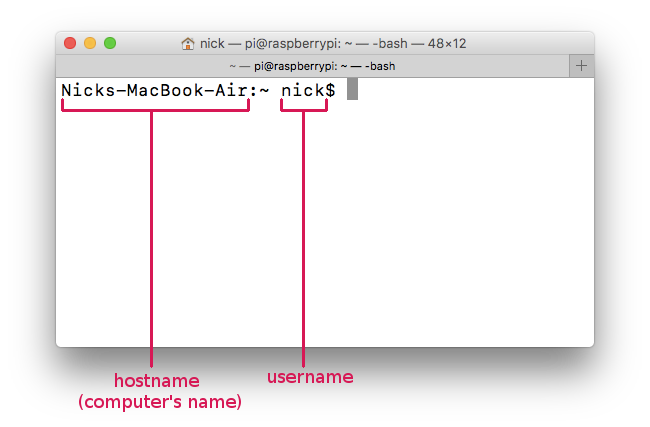
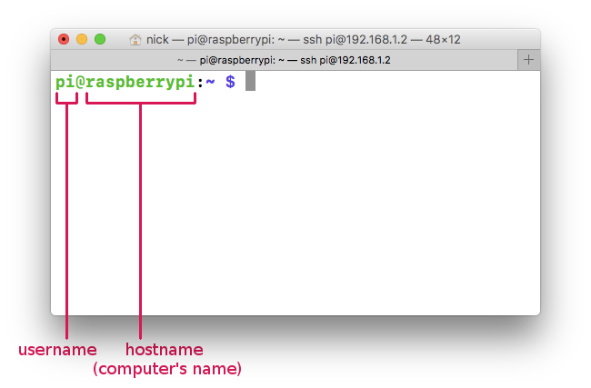

You typically interact with your computer's operating system through it's GUI (graphical user interface), you open directories by double clicking on the folder icons and you run programs by double-clicking on the app icons, you move windows around by clicking-and-dragging and open up "context" menus by right-mouse clicking (or double-finger clicking on Mac trackpads).
But before there were GUIs there were CLIs or "command line interfaces". a CLI is another way of interacting with your computer's operating system, in the CLI you can typically do everything that you can do in the GUI and more! As was mentioned in the video above, the CLI is still used regularly by programmers to do things like access and control remote computers (anywhere in the world) and building/running custom software. Getting comfortable with the Command Line means you'll be able to transcend the restrictions of the consumer-oriented interfaces of the "desktop" metaphor.
The instructions below assume you're using a UNIX-like operating system, like the kinds you find on Apple or Linux PCs like Raspberry Pi and most "cloud" computers (think servers), essentially everything except Windows
Let's start by opening up our "terminal", this is the app on Mac (Apple laptops/desktops) and Linux systems that give us access to our operating system's command line or "shell". On Mac you can find this in your Applications or by typing "terminal" into your spotlight search. You can have multiple terminals open (or terminal tabs open), each is referred to as a "terminal session".


What you'll see is a command prompt, this will contain a $ symbol, to the left of it you'll see the following information: the hostname (the name of the computer you're controlling), the username (the name of the user you are logged into this computer as) and some reference to the folder you are currently in (usually relative to your home directory). To the right of the $ is where you'll type in your commands
running commands
aka CLI programs
In order to run a command (which is what we call programs in the terminal) just type in the name of the command and press enter.
For example type in pwd and press enter. What will happen is your computer will run the "pwd" command, which will print the full absolute path of the folder your terminal session is currently in (ie. the "present working directory") and then the program will "exit" (which means it finished running and quit). You'll then be returned to a new command prompt.
Another simple command is ls, this will list all the files and folders in your present working directory.
command options
somtimes also known as flags
Most commands (ie. command line programs) have different options which dictate how/what the program should do when it runs. These options are written after the command (preceded by a space) and will often start with a - or --.
for example, the ls command doesn't show you any hidden folders/files by default, in order to list both visible and hidden run the ls command with the all option like this: ls --all or ls -a for short. Sometimes these are also called flags.
NOTE: unless you had hidden files in this directory you're unlikely to notice a difference in the results except for two things a single . and a double .. the single . represents the current directory while the .. represents the parent directory (this should sound familiar given what you know about writing relative paths)
Another useful option/flag for the ls command is -l which will list the folders and files along with more information about them including their permission settings, the user who created the file, file size and the date it was last modified. You can use both the -l and -a options at the same time like this: ls -l -a or you can combine the flags like this ls -la
quitting a process
when they don't exit on their own
So far all the commands we've gone over run very quickly and exit immediately. Some commands, however, take a very long time to finish and others run forever. In these cases you need to "interrupt" the process by pressing ctrl + c, this will abort the program or force it to exit.
Take the ping command for example. This command is used to test your network connection, it will send a simple packet known as an "echo request", which (like the name implies) tells the server of a website your pinging to "echo" back a packet and it will measure the time it took to get from your computer to the server and back. The ping command takes the URL (Web address) of a website as an argument, for example ping netizen.org.
If you run that command you'll notice data from each echo request list in the terminal one by one. The data includes info like the IP address of the server you are pining, as well as the time it took (in milliseconds) to make the round trip. You'll have to interrupt the process yourself with ctrl + c in order to stop pinging.
arguments and options
mixing 'em up
Some commands can take both options and arguments, in these situations you usually write the options before the arguments. For example, we already learned that the -l option in the ls command lists information about the files in a directory. if you only want to see the information of a particular file in the pwd you can pass ls a filename as an argument, the full pattern looks like this ls [options] [argument] for example: ls -l doge.png
In some cases you might have options/flags which require an argument/parameter and so you end up with a pattern that looks more like [command] [option] [argument] [option] [argument]. Take the ping command for example. Rather than running forever until you force quit the process yourself, you can pass the -c option (short for count) followed by the number of echo requests you want to send. Ping also has another option -i to specify the time in seconds between each interval, so if you wanted to send 3 echo requests with 2 seconds between each you would write ping google.com -c 3 -i 2
finding files/folders
in the command line
We now know how to navigate to different folders, but that's only useful if we know where we want to go, what if we're trying to find something? A couple of very useful commands for searching for content on your drive are find and grep, the former searches for files while the latter searches inside of file's content. For example, say you want to find a particular file, maybe my-notes.txt, on your computer. You know that it's somewhere in your Documents folder so you navigate into that folder cd /User/nick/Documents and list it's contents ls -la only to realize that you've got folders in folders in folders... and can't remember where you put it!
This is where find comes in, you pass it two parameters: the first argument is the directory you want to search in and second, the option -name followed by the name of the file you want to find as an argument. because we are already in the Documents directory we can simply pass a . as the directory (which you may recall means the current directory), so the full command looks like this: find . -name my-notes.txt and just like that the command returns the path to the file you were looking for!
Now say that file is thousands of lines long, and you're looking for a specific thing you wrote about "cat memes", this is where grep comes in. You can pass a pattern or string of text you want to locate followed by the filename you want to search, for example: grep "cat memes" my-notes.txt and will print out every line in the document that matches the search pattern.
* (wildcard)
A useful trick when passing arguments to a command is the * symbol, also known as a "wildcard" character, you can use this symbol in paths or filenames as a stand-in to mean "anything goes". Say for example you know you've got an imaged named cat-meme in your Documents folder somewhere but can't remember if it was a .jpg or .gif or .png you can use the * in-place of the extension like cat-meme.* and it will list all the files named cat-meme regardless of their extension, for example: find /Users/nick/Documents -name cat-meme.* you can place the wildcard in any part of the argument, so say for example you knew the filename started with some word followed by "-meme" you could search for *-meme.*.
~ (home folder)
Another special character when writing file paths is the ~ symbol. This is a shortcut to the currently logged in user's home folder. On Mac this tends to be something like /Users/username, on Linux it's /home/username. So rather than writing something like /Users/username/Downloads/cat.jpg you could alternatively write ~/Downloads/cat.jpg
dealing with spaces
So far none of the folders and file names we've discussed have had spaces, when they do there's a couple ways to deal with them. Say you need to navigate into a file in your Documents folder called class notes with a space between the two words. You CAN NOT do this: cd /Users/nick/Documents/class notes because it assumes you're trying to navigate into a folder called class and interprets the word notes as a second argument.
Instead you have two options: first, you can surround the entire argument (in this case the directory path) in quotes like this: cd "/Users/nick/Documents/class notes", or, alternatively, you can escape the space by preceding it with a \ symbol, this tell the terminal to interpret the space as the space character rather than as a space between arguments, like this: cd /Users/nick/Documents/class\ notes
creating files/folders
as well as deleting/removing them
So now you know how to find stuff and navigate around your hard-drive using the terminal. How do you create and delete files and directories? As you might expect there are command line tools for that as well. To create a directory you use the mkdir (short for make directory) followed by a path and name of the folder you want to make, for example if you want to create a new folder in your Documents folder called cat-memes you simply write mkdir /Users/nick/Documents/cat-memes or say your pwd happened to already be the Documents folder you simply write the relative path, which would just be mkdir cat-memes, then to get rid of it use rmdir (short for remove directory) like this: rmdir cat-mems, this will only work if the folder is empty, if it isn't you'll need to use the rm command.
The rm command (followed by a path to a file) is used to delete files, for example rm my-cat.jpg will remove the file named my-cat.jpg in the current directory. Back to our example from before, if cat-memes is a directory with stuff in it you can do this: rm -rf cat-memes, the -f flag stand for "force" and the -r flag stands for "recursively" which means recursively check every file and sub-directory inside "cat-memes" and them all.
WARNING: be very careful with this command! Unlike moving items to the "trash can" this will delete the files permanently! There's a very cruel joke on the Internet where folks will tell people on forums to type in rm -rf /NEVER DO THIS, if you read that command carefully you'll notice it's telling your computer to delete everything inside the / folder (your "root" directory)... essentially this wipes your computer!
So that's how you delete files, to make them you have a couple of options, you can use the touch command followed by a file-path/name to simply create an empty file with that name, like this: touch /Users/nick/test.txt will create an empty file in my home folder called test.txt. Or you could use a command line text editor like nano you can create a file or edit an existing one by running: nano /Users/nick/test.txt this will open up a command-line editor, you can type whatever you want into the file and then follow the shortcut keys in the menu at the bottom to save/exit/etc .
You can also copy and move files around in the terminal using the cp (short for copy) and mv (short for move). Both of these take two arguments, first, path to the file you want to move or copy, second, path to the new file. So for example if I have a file called doge.jpg in my pwd, and I want to move it into a sub-folder called dog-pics, I can do: mv doge.jpg dog-pics/doge.jpg, if I wanted to make a copy of it instead I could do: cp doge.jpg dog-pics/doge-copy.jpg.
Command Redirection
saving output and chaining commands
Each command line tool can technically/generally accept input via what's called "standard in" and returns (ie. displays in the terminal) the result via "standard out" (unless there was an error in which case it responds via "standard error"). If you run commands like we have been the "standard out" and the "standard error" simply print (display) to the terminal, but you could alternatively redirect that output to a file using the > symbol. Say for example you wanted to save the output of 4 pings to a file each day of a week in order to compare the results and see how your network speeds vary from day to day. You could do something like ping google.com -c 4 > monday-pings.txt, and then to confirm it worked (sense the standard out is no longer printing to the terminal) check that file with nanonano monday-pings.txt or simply print the content of that file to the terminal using catcat monday-pings.txt.
Another redirection technique is to "pipe" the standard output of one command into the standard input of another using the | symbol. This can be a very powerful tool as you can create all kinds of complicated chains! For example, say you wanted to list all the files in a directory that were modified in August, we know that ls -la will list all the files in a directory (including the date last modified), we can "pipe" the outputted list into grep to filter for only the lines with "Aug" in them like this: ls -la | grep "Aug", you can pipe as many commands together like this as you like.
Sudo
controlling root/admin processes
There are a few command line tools for monitoring and controlling processes. Run top to see all the currently running processes as well as their PIDs (process identification numbers) and how much CPU and Memory each is using (press ctrl + c to quit top). If there's a particular process you wan to quit you can use the kill command and pass it the PID of a particular process. For example if while running top I noticed my Firefox PID was 3824, if I want to quit Firefox in the terminal I can run kill 3824. If I have lots of processes running and I'm trying to find the PID of a specific one, I can use the ps command, which will output a list of running processes, for ex: ps aux, and I can pipe that to grep to filter the list for the particular process i'm looking for, for example: ps aux | grep "firefox"
You'll notice that some of the process weren't started by your user, but instead were launched by "root", here "root" doesn't mean your top directory, instead it means this was a process launched by your computer (likely on startup), you're User likely doesn't have "root access" by default, so it can't kill these processes. If you ever need root (aka "admin") privileges to run a particular command all you need to do is precede the command with "sudo", for example if there's a process with a PID of 1234 that I need to kill, but I can't by default because it was launched by root, I just need to do: sudo kill 1234, the terminal will then prompt me for my password, then I just need to type it in and hit enter.
NOTE: most of the time, when you are typing in passwords into the terminal you won't see any of the text you type displayed (nor will you see dots or asterisks as is common in password fields in apps and on the Web), this might appear as though nothing is being typed in, but it is, the terminal is merely hiding it for privacy.
With sudo (or root) you can also do things like restart or shutdown a computer like: sudo reboot and sudo poweroff
controlling other computers
remote access over a network
You can log into a terminal session of another computer on your local WiFi network or elsewhere on the Internet securely using ssh (short for secure shell), you simply need the username (and password) of a user on the computer you want to log into as well as the IP address of that machine, for ex: ssh nick@123.456.78.90 will attempt to log into the computer at the IP address 123.456.78.90 as the user "nick". I'll be prompted for a password and if I have the right one I'll now be in a terminal session on that computer and can use all the commands we've discussed to control folders, files and processes on it.
So how do you know what the IP address of a machine is? Well there are a few tools, if you want to check your own IP address on a local network you can run ifconfig to list all your network devices (ethernet port, WiFi card, etc) along with their local-IP addresses. It's wroth mentioning here, that if you do a Web search for "what is my IP address", what you'll see is your public-IP address, this is technically your router's IP address. Because everyone on the same network shares the router's IP address as their public-IP, it's up to your router to assing local-IP addresses to each machine on the network to properly route all the network traffic.
If you want to find the IP address of other computers connected to your local network you can run nmap with the range of IPs to scan, say you noticed your computer has an IP address of 192.168.0.12, likely the router is going to be 192.168.0.1 and every other computer on this network will likely also start with 192.168.0.???, you can scan a range like this: nmap -sn 192.168.0.1-100, when nmap is done scanning that range it will list of IP addresses for the connected computers.
If you're logging into a computer you've got on the "cloud", you can also use ssh except the IP address will be the computers public Internet IP address (rather than it's local address).
Similarly, you can copy files from one computer on a network to another by using the scp (secure copy) command. Say for example I've got my laptop connected to the same WiFi network as a Raspberry Pi computer that I wanted to copy a file from, I could do something like this: scp pi@192.168.0.3:~/Documents/cat.jpg ~/Desktop/cat.jpg, the pattern is essentially scp [username]@[IP-address]:[~/path/to/file] [path/on/ur/comptuer/to/file]
useful helpers
a few CLI tips
This is definitely a lot to remember all at once! Fortunately there are a few useful tricks and commands for helping jog your memory. First, when in a terminal session you can hit the up/down arrows to review your history of prior commands (maybe you can't remember exactly how you wrote a command but know you did it before and so it's somewhere in your history). You can also print your history to the console using the history command, and as usual you can use grep to filter that output for a particular command, say you remember using nmap but can't remember exactly what the flags you used were, you can simply do: history | grep "nmap" to see every time you used the nmap command.
One of the easiest mistakes to make is mistyping a folder or file's path. You might forget a sub-folder, you might misspell a file's name or forget to capitalize a letter, etc. Even the most seasoned hackers screw up file paths from time to time. One way to avoid this is using the terminal's ability to auto-complete filenames for you by using the Tab key when writing paths. Say for example, you wanted to open a file called my-very-detailed-command-line-notes.txt that was on your Desktop using nano, you could start to type: nano ~/Des at which point you can press the Tab key and he terminal will auto-complete the folder's name for you nano ~/Desktop/, you could then start typing the file's name nano ~/Desktop/my and hit Tab again so that the terminal auto-completes to: nano ~/Desktop/my-very-detailed-command-line-notes.txt. This doesn't always work though, if there were two files beginning with my the terminal won't know which one to auto-complete, so you need to make sure you've got enough of the folder or file's first few characters to make it unique.
We've only covered the basic ways to use some of the basic commands, but many of these commands have many more options/flags and other things you can do with them, if you ever want to learn more about a particular command there's a couple things you can do. Most commands have a quick help/example instructions accessible by running -h or --help for example, both nmap -h and nmap --help will print out a list of options you can use. Otherwise, most commands have an instructions manual that explains everything you need to know about a given command, you can access a command's manual by using the man command, for example: man nmap